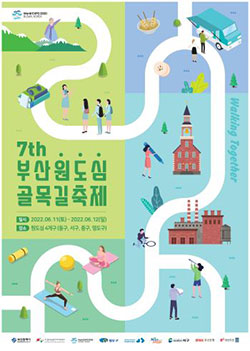

축제개요

제7회 부산원도심골목길축제
-Walking Together
일 정 : 2022. 06. 11.(토) ~ 2022. 06. 12.(일)
장 소 : 중구, 동구, 서구, 영도구 원도심 4개구 일원
주 최 : 부산광역시
주 관 : 부산문화관광축제조직위원회
문 의 : 051-507-9716
"원도심 골목길 축제"
부산원도심골목길축제는 원도심 4개구 (영도구, 서구, 중구, 동구)의 골목을 활용하여 원도심의 브랜드를 높이는 네트워크형 축제로 기획되었습니다. 올해 7회째를 맞이한 부산원도심골목길축제는 4개구 골목길을 각양각색의 테마를 적용해 직접 걸으며 느끼는 프로그램으로 준비되어 있습니다. 부산원도심골목길축제를 통해 서로 비슷하지만 다른 골목의 특별함을 느껴보세요!